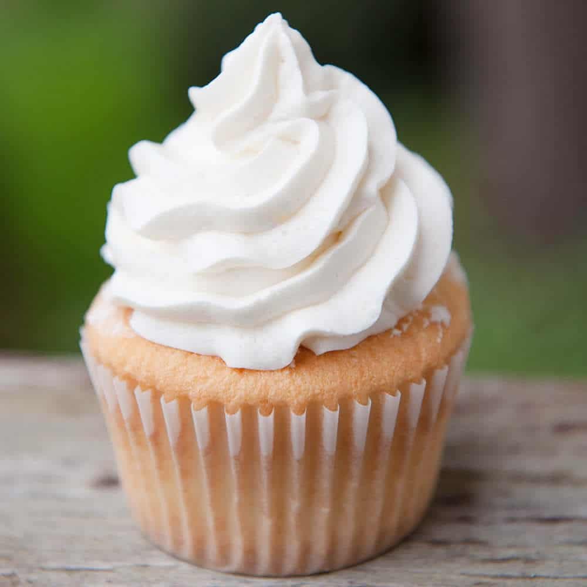

Super Secret Frosting

Description
The best not-too-sweet frosting
Tastes like whipped cream but has the structure of buttercream!
Ingredients
- Flour
- White Sugar
- Warm Milk
- Vanilla Extract
- Pinch of Salt
- Unsalted Butter
Steps
- Cook flour and sugar in saucepan, stirring constantly
- While whisking, slowly add warm milk. Cook until it becomes a thick custard texture
- Transfer mixture to bowl and cover with plastic wrap, pressing down on the surface
- Cool to room temperature
- Beat butter for 3 minutes or until it turns fluffy and pale yellow
- While beating butter, add flour mixture one tbsp at a time
- Add vanilla and salt and you're done!